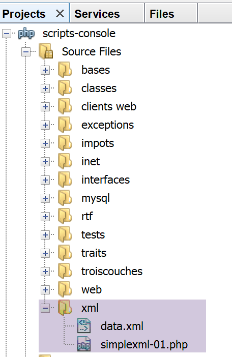

21. Processing XML Documents

Consider the following XML file [data.xml]:
<?xml version="1.0" encoding="UTF-8"?>
<tribu>
<teacher>
<person gender="M">
<last_name>dupont</last_name>
<first_name>Jean</first_name>
<age>28</age>
This is a comment
</person>
<section>27</section>
</teacher>
<student>
<person gender="F">
<last name>martin</last name>
<first_name>Charline</first_name>
<age>22</age>
</person>
<education>IAIE degree</education>
</student>
</group>
We analyze this document with the following script:
<?php
// XML file to process
$FILE_NAME = "data.xml";
// processing
$xml = simplexml_load_file($FILE_NAME);
print_r($xml);
print_r($xml->teacher->person['gender']);
$name = $xml->teacher->person->name;
print "name=$name\n";
$gender = $xml->teacher->person['gender'];
print "gender=$gender\n";
$education = $xml->student->education;
print "education=$education\n";
print "isset=".isset($xml->teacher->person->name)."\n";
print "isset=".isset($xml->teacher->person->xx)."\n";
Here we use a PHP module called [simpleXML] that allows us to process XML documents.
- line 6: loading the XML file;
- line 7: displaying the XML document;
- line 8: displaying the value of the 'sex' attribute of a teacher: <teacher><person sex='…'>;
- line 9: displaying the value of the first tag <teacher><person><name>;
Note that the root tag <tribe> does not appear in the code. It could be anything;
Console output
SimpleXMLElement Object
(
[teacher] => SimpleXMLElement Object
(
[person] => SimpleXMLElement Object
(
[@attributes] => Array
(
[gender] => M
)
[last_name] => Dupont
[first_name] => Jean
[age] => 28
)
[section] => 27
)
[student] => SimpleXMLElement Object
(
[person] => SimpleXMLElement Object
(
[@attributes] => Array
(
[gender] => F
)
[last_name] => martin
[first_name] => charline
[age] => 22
)
[education] => IAIE degree
)
)
SimpleXMLElement Object
(
[0] => M
)
name=dupont
gender=M
education=IAIE design
isset=1
isset=
- lines 1-37: the XML document in the form of a [simpleXML] object.
The previous script does not show us all the possibilities of the [simpleXML] module, but it is sufficient for us to write a new version of the application exercise.